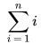

Programming languages today look pretty much the same as they did 30 years ago. Today they may have a few more features but are not substancally better as a notation for thought. I have created another programming language in attempt to introduce a new way to think about programming.
This new language is different because there is: —No assignment operator.
—No loop/while/do statement
—No function type.
—Only uses program state in a very controlled way.
—Words are the basic text element instead of characters.
—Heavy use of sequences.
—Introduces a new control structure modeled after the sigma operator in mathematics.
Functional program languages have no assignment operator or loop statements, but tend to be based on the lamada calculus which makes use of higher order functions. We only include the basic operations on function of declaring and calling of them and the binding of unbound function to an actual function in an instantiation of a function from a parameterized module.
Functional languages tend to use recursion to replace the control structures of loops. The full power of recursion is seldom needed. We introduce a generalized version of the sigma operator use in mathematics to cover many of the simple uses of recursion.
A program is represented as a sequence of characters. The character encoding is assume to be unicode represented in UTF8 format. The program is broken into a sequence of paragraphs where one or more blank lines separate the paragraphs.
Paragraphs that do NOT start with type , use , Library , module , Function , or function are always treated as comments.
Each paragraph is broken into words. One or more spaces separate the words. A single line break is treated the same as a space. The characters ()+,-.:= []^_" are all treated as if they have an implied space before and after them so they are words formed from a single character. For example,"a + b" is equivalent to "a + b"; but "a * b"is not equivalent to "a*b". A period followed by a space is treat as a separate word from a period followed by no space. This allows a period at the end of a sentence to be distinguished from a period in google.com. A word sequence literal is quoted like"This is a string Literal." " is used to represent a double quote within a word sequence literal.
An integer literal is represented by a sequence of words where each word only contains digits. That is spaces are allow to make long integers more readable. For example 1000000 is equivalent to 1 000 000. A real number is two integer separated by a period. For example 0.0 and 10.01 are real numbers where 0 0 and 10 01 are integers.
For easy entry, ASCII equivalents for ≤ ≥ ≠ ∧ ∨ are &le &ge &ne &and &or respectively.
Be careful to insert necessary spaces around operators. 8*9 is incorrect and should be written as 8 * 9, but (8)*(9) is ok.
Occasionally some unexpected lexical issues arise. (Example is no longer valid as tupes use notation. notation only.)Consider the function definition function test int (3 + 4)* 5 Here the return type becomes int(3 + 4)which is illegal. Grouping braces resolve the difficulty function test int {(3 + 4)* 5 }
When converting a sequence of words back to characters for output, an space is usually added after each word with the exceptions:
1. If the word is "()-].:^ or is a space or a period followed by a space then the space before and after the word is not added.
2. If word is a comma then the space before the comma is suppressed.
These rules sometimes do not produce the desired result. To improve the result, no-break spaces can be added. On the Mac keyboard pressing the option key and then space bar will insert a no-break space.
Here is a list of infix binary operators. The operators on the same line are the same precedence and higher precedence than those on the following line.
_^
unary minus
* / mod ∪ ∩
in +-∈ ∋
= < > ? ≤ ≥ ≠ >> <<
∧
∨
()or {} are used to override the default precedence. Procedure calls are of the form f1(p1, p2, …, pn). f1()is illegal and should be written f1. To avoid excessive parentheses in expressions f1(p1)is equivalent to f1.p1. The precedence of. is between the_and the *.
Infix operators are simply another notation for function calls. a + 3 * b is equivalent to +(a, *(3, b))
The computation unit in tau is a library. A library contains modules. A module is a sequence of paragraphs with this first paragraph starting with the word module .
A paragraph is a sequence of words. Paragraphs that do NOT start with type, use, module, Library, Function or function are always treated as comments.
The syntax for non-comment paragraphs is <paragraph>::= <module definition> | <definition> | use <type>
<module definition>::= module <word>(T)| module <word>
<name list>:= <word>:<type> | <name list>, <word>:<type>
<definition>::= type <word> is record <name list>
| type <word> is sequence <name list>
| type <word> is encoding <type>
<definition>::= function <function name>(<name list>)<type> <exp>
| function <function name> <type> <exp>
| Function <function name>(<name list>)<type> <exp>
| Function <function name> <type> <exp>
<function name>::= <word>
<let name>::= <word>
<parameter name>::= <word>
<type>::= <word>
<type>::= <word>.<type>
<function call>::= <function name> | <function name>(<exp list>)
<exp>::= <function call> |<parameter name> |<let name>
<exp>::= if <exp> then <exp> else <exp>
<exp>::=(<exp>)
<exp>::= {<exp>}
<exp>::= <exp> <binary op> <exp>
<exp>::=-<exp>
<exp>::= <word>.<exp>
<exp>::= <sequence constructor>
<sequence constructor>::= [ <exp list>]
<exp list>::= <exp> | <exp list>, <exp>
<exp>::= @(<function call>, <function call>, <exp>, <exp>)
<exp>::= let <let name> = <exp> exp
<exp>::= assert <exp> report <exp> exp
<exp>::= // < one or more words not containing / /> // exp
<exp>::= process.<function call> | process(<function call>)
Comments are traditionally defined at the lexical level. In tau they are defined as a prefix operator so that they can easily be included in a parse tree.
Sequence, S, is a function whose domain is the integers and whose range is some type. A literal for a sequence of integers is represented as [ 2, 4, 8, 16, 32]. We can refer to this sequence as test1 if we define
function test1 seq.int [ 2, 4, 8, 16, 32]
The type for a sequence of integers is seq.int. The length of the sequence can be obtained by calling the function length. In this case the length(test1)is 5. There is a subscript operator_that can obtain the elements of the list:test1_1 is 2 and test1_5 is 32.
A sequence of characters in double quotes does not represent a sequence of characters but a sequence of words.“Hello World!” represent two words.
The code [ “Hello”_1, ”World!”_1]is equivalent to “Hello World!”
The word consisting of a single double quote can be represented within double quotes by ". "" Hello World! ""starts and ends with a double quote.
""represents an empty sequence of words. An empty sequences has a length of zero. Since the type of a empty sequence can not be inferred from the type of its elements the empty sequence of int is coded as empty:seq.int.
The elements of a sequence can themselves be sequences [ [ 3, 4], [ 3, 6, 7], [ 8, 9]]. The type of this sequence is seq.seq.int. The empty sequence of this type is represented by empty:seq.seq.int.
The concatenation operator for sequences is +, for example the expression test1 + [ 2, 3]evaluates to [ 2, 4, 8, 16, 32, 2, 3]
Sub-sequences are obtain with subseq(s:seq.T, start:int, stop:int)seq.T where T is any type. For example, the expression subseq(test1, 3, 4)evaluates to [ 8, 16]
The type of an expression can always be inferred from the sub-expression. For example, 1.0 + 5.0 is of type real, 1 * 8 is of type int, and 1.0 = 8.0 is of type boolean.
User defined types can be either a record, a sequence, a parameterized record or an encoding. Below a user defined record type is defined as an example.
The following paragraph starts a new module. A module is a collection of functions and types.
module point2d
Here is a simple type definition that introduces a new type with two components.
type point2d is record x:int, y:int
The follow paragraph that begins with use allows reference to functions defined in another module. In this case, the standard library functions.
use stdlib
The follow three paragraphs allow access to the function automatically defined by the type definition in other types that “use” this module. If these paragraphs are omitted the functions would not be available outside of this module. If a function starts with “function” instead of “Function” the function is also not available outside the module.
Function point2d(a:int, b:int)point2d export
Function y(a:point2d)int export
Function x(a:point2d)int export
The following two paragraphs defines an addition and subtraction function on point2ds.
Function +(a:point2d, b:point2d)point2d point2d(x.a + x.b, y.a + y.b)
Function -(a:point2d, b:point2d)point2d point2d(x.a-x.b, y.a-y.b)
Function print(p:point2d)seq.word {"("+ toword.x.p +","+ toword.y.p +")"}
Function testpoint seq.word print(point2d(2, 3)+ point2d(4, 5))
Since a program is sequence of paragraphs.The above text can be placed in a file and turned into a running program. A module lives with in the context of a library. So a file name point2d.ls is required with the first paragraphs being:
Library point2d uses stdlib exports point2d
The remainder of the file is the above text. This file can then be place in a subdirectory named point2d. Then the program can be compile and executed with ./taumain “point2d point2d testpoint”
The module stdlib defines several commonly used types.
The types int and real are implement by the underlying hardware and have the usual operations. A more complete definition of will be supplied in a future release.
The type boolean has operators:&and &or not true and false . The second operator of &and and &or is evaluated if and only if the first operator does not determine the result.
For working with total orderings a type ordering with the values LT EQ and GT is defined. An &and operator on orderings is defined as
Function ∧(a:ordering, b:ordering)ordering let x = a if x = EQ then b else x
A let statement in a function allows an name to be given to an expression so the name can be used in the expression that follows. This can make code easier to read or improve efficiency by evaluating the expression only once.
One can always remove a let statement from a program by defining an additional function. For example the function above can be replaced with
function f1(a:ordering, b:ordering, x:ordering)ordering if x = EQ then b else x
Function ∧(a:ordering, b:ordering)ordering f1(a, b, x)
The Aggregation operator(@)is a generalization of the sigma operator in mathematics. The motivation behind introducing this control operator is to replace the use of recursive calls in many cases.
Consider

We can use arithseq(n, 1, 1)to represent the sequence 1 to n. The arguments of arithseq represent the number of elements, the incremant, and start value.
The sum above can equivalantly be expressed as follows sigma(0, arithseq(n, 1, 1), 1)where
function term2(n:int)int n + 1
function term1(a:int, b:int)int a + b
function sigma(acc:int, s:seq.int, i:int)int
if i > length.s then acc else sigma(term1(acc, term2(s_i)), s, i + 1)
Using aggregation this can be express as @(term1, term2, 0, arithseq(n, 1, 1))or @(+, +.1, 0, arithseq(n, 1, 1))
More generally @(term1, term2, exp1, exp2)where exp1 is of type <resulttype> and exp is of type seq.<elementtype> is defined as
apply(exp1, exp2)
where
function apply(acc:<resulttype>, s:seq(<elementtype>), i:int)<resulttype>
if i > length.s then acc else apply(term1(acc, term2(s_i)), s, i + 1)
Term1 and term2 can have parameters.@(term1(p1), term2(p2), exp1, exp2)is defined as
apply2(exp1, exp2)
where
function apply2(acc:resulttype, s:seq(elementtype), i:int)resulttype
if i > length.s then acc else apply2(p1, term1(acc, term2(p2, s_i)), s, i + 1)
Using this form the example sigma sum above where n = 10 is @(+, +.1, 0, [ 1, 2, 3, 4, 5, 6, 7, 8, 9, 10])
An expression for summing a sequence is @(+, *.1, 0, [ 1, 2, 3, 4])= 0 + 1*1 + 1*2 + 1*3 + 1*4 = 10
A product for the elements in a sequence is @(*, *.1, 1, [ 1, 2, 3, 4])= 24
The following gives back the same sequence @(+, identity, empty:int, [ 1, 2, 3, 4])evaluates to [ 1, 2, 3, 4]. "+"is the concatenation operator.
One can print a sequence of integers with
function print(a:seq.int)seq.word
{"["+ @(separator.",", print,"", a)+"]"}
function separator(sep:seq.word, a:seq.word, b:seq.word)seq.word
if length.a = 0 then b else a + sep + b
A type can have a single type parameter of named T. The T can be used anywhere a type can be used.
Generic unbound functions on the type T may be included by using the word unbound as the defining expression. When the parameterized type is used, there must exist a function with the same signature as the unbound one where T is replaced with the actual type for T.
module extendseq(T)
use stdlib
use seq.T
function ?(T, T)ordering unbound
function =(T, T)ordering unbound
Function reverse(s:seq.T)seq.T
@(+,_.s, empty:seq.T, arithseq(length.s, 0-1, length.s))
Here is a use of this type
module testextendseq
use seq.int
use point2d
use seq.point2d
use extendseq.int
use extendseq.point2d
use stdlib
function test seq.int reverse.[ 1, 3, 4, 5]
function test2 seq.point2d reverse.[ point2d(1, 2), point2d(3, 4)]
In this example the unbound function ? and = are bound to the integer function for ? and = in the stdlib module.
The arguments of a function are evaluate from left to right before the function is called.
Not all arguments need to be evaluated. Consider i > 0 ∧ 300 / i < 10
function ∧(a:boolean, b:boolean)boolean if a then b else false
The compiler does simple inline expansion and the above expression becomes if i > 0 then 300 / i < 10 else false This expression never evaluates 300 / i < 10
This behavior is required for the &and operator on booleans.
Consider the following code:
Module B
Function TWO int 2
Module A
use B
use stdlib
Function f1(p1:int)int
let l1 = p1 * TWO
p1 * l1-3
Parameters implicitly declare an access function"function p1 int"Parameters are only visible in the expression that defines the body. In the above p1 is only visible in the body of f1.
Names of Functions are visible within the module.
Functions from another module B are visible in module A, if they are declared using Function rather than function or they are exported and the module A includes a use statement" use B”. In the above the function TWO is visible in module A and B.
An word of all digits implicitly declares an access function"function 3 int"
Let definitions are only visible within the second expression in the let statement. Let definitions declare an access function"function l1 < the type of the first expression of the let>". The definition itself returns the type of the second expression.
A function call f1(<exp1>, <exp2>,...)must match exactly one visible function defintion in name, number of parameters and types of the expressions of the arguments.
The type of the expression that defines a function much match the return type of the function.
The module seq.T also defines some derived operators. If = and > are defined on T, the module defines the binary operators <, ≤, ≥, ≠ in terms of = or >. The operator for comparision"?"could be defined as a derived operator but is not because a more effiecent definition may sometimes be coded than the derived one.
Here is an example definition of one of the derived operators:
Function ≠(a:T, b:T)boolean not(a = b)
A type can be mapped to positive integers in an encoding. As an example consider implementing a cache that stores the factors of an integer.
We need a type to encode:
type factors is record key:int, factors:seq.int
We must define a hash function and = function of the type.
function hash(a:factors)int key.a
function =(a:factors, b:factors)boolean key.a = key.b
Note that for a and b of the type factor ; a = b implies hash(a)= hash(b). This must be true for the hash to work correctly.
The declaration below with introduce a type encoding.factors with the name of myencoding.
type myencoding is encoding factors
There can be many encodings of the type factors , so they have names to distinguish between them. Furthermore an encoding can have different life times. The encoding above is created at the first use in a process and is destroyed when the process finishes. It is available in any child process of the creating process.
Two parameterized types are involved in a encoding: encoding and erecord . The first is use to represent the values of the encoding and the second the name of the encoding.
The parameterized module seq defines the following functions for working with encodings.
Function encode(T, erecord.T)encoding.T // will return the encoding // ;
Function decode(encoding.T, erecord.T)T // will return the value that was encoded // ;
Function findencode(t:T, erecord.T)seq.T // will return the empty sequence if the value has not been mapped or a sequence of containing the value that was mapped.// ;
Function orderadded(erecord.T)seq.T // list of values that have been encoded.// ;
The following two function are used to calculate the factors of an integer
function factors(n:int)seq.int factors(n, 2)
function factors(n:int, i:int)seq.int
if 2 * i > n
then [ n]
else if n mod i = 0 then [ i]+ factors(n / i, i)else factors(n, i + 1)
Now we can define a function that only calculates the factors if they have not been previous calculated.
use seq.factors
function cachefactors(n:int)seq.int
let a = findencode(factors(n, empty:seq.int), myencoding)
factors. if isempty.a then decode(encode(factors(n, factors.n), myencoding), myencoding) else a_1
Consider the sequence of calls, C, in the execution of the program to the function encode. Let S be the sequence of T where S_i is the value passed as parameter in call C_i Let E be the sequence of results where E_i = the result of call C_i.
Then S_i = S_j if and only if encoding(E_i)= encoding(E_j) and decode(E_i)is identical to S_j where j = min t where S_t = E_i and (E_i)> 0
Since the mapping is can be shared by multiple process, modification of the the mapping is a critical section. Also the mapping may contain values not assigned by the current process.
Process are included in Tau for three reasons.
Using multiple processes on multi-core processors can be used to obtain results faster.
Process allow temporary space used to calculate the result to be reclaimed. This is the only way for heap space to be reclaimed in Tau.
Process allow abnormal events to be captured and reported. The following code snippet show how to capture an abnormal event.
use process.int
function myprocess(a:int)int
assert a > 0 report "invalid"
3^a
function useprocess(i:int)int
let a = process.myprocess.i
if aborted.a then assert message.a ="invalid" report "new message"
0
else result.a
In the use clause, the type int matches the return type of myprocess. The process function takes a expressing of the form <funcname>(<arg list>)evaluates the arguments and then spawns a process to execute the function returning a result of type process that refers to the spawned process.
The follow function interact with the spawned process and blocks to wait for the spawned process to finish.
function aborted(process(T))boolean // true if the process was aborted as with an assert statement // ;
function message(process(T))seq.word // message return when process was aborted // ;
function result(process(T))T // result return upon successful completion. // ;
The spawning process cannot terminate until all of it child process complete, because it may have allocated space and passed it to a child process as a parameter.
We use the example of myseq which is a start on a user defined sequence to decode UTF8 sequnece of bytes. The length of the sequence is the number of characters. The i'th element of the sequence with be the i'th character in the encoding.
Module myseq(T)
All sequences must be in a parameterized Module.
use stdlib
use seq(T)
type myseq is sequence length:int, data:seq.T
All sequences must have the first element representing the length of the seqence. As with any parameterized scope any type must contain an element that uses T so that multiple instances of the module does not produce duplicate symbols.
We need some operations on T. T will be an int in this example so all these operations are define on int in the stdlib.
function >(T, int)boolean unbound
function <(T, int)boolean unbound
function -(T, int)T unbound
function *(T, int)T unbound
function +(T, T)T unbound
We need to helper functions to calculate the length and find the ith element of the seq for this example.
Function clength(s:seq.T, i:int)int
if i > length.s
then 0
else assert s_i > 0 report "invalid"
if s_i < 128
then 1 + clength(s, i + 1)
else assert s_i < 128 + 64 + 32 report "invalid"1 + clength(s, i + 2)
Function cindex(s:seq.T, i:int, idx:int)T
if idx = 1
&keyword then if s_i < 128 then s_i else s_(i + 1)-128 +(s_i-128-64)* 64
&keyword else cindex(s, i + if s_i < 128 then 1 else 2, idx-1)
We need a constructor of our sequence. Note the use of a toseq function. This is defined implicitly by the sequence type definition to change the type from myseq(T)to seq(T).
Function myseq(d:seq.T)seq.T toseq.myseq(clength(d, 1), d)
Every sequence must have a_function defined on it which is below for mseq.T
Function _(a:myseq.T, idx:int)T cindex(data.a, 1, idx)
module testmyseq
use stdlib
use UTF8
use myseq.int
Function testmyseq seq.word
keyword let s = UTF8.[ 40, 50]+ UTF8.335 + UTF8.50 + UTF8.336
@(+, toword,"", myseq.toseqint.s)
A function is tail recursive if the last function called is itself. A compiler can take advantage of this and reuse the activation record on the call stack resulting in less space taken up by the stack during execution.
Sometimes a recursive function can be rewritten to make it tail recursive. Consider the following function:
use seq.int
function reverse2(l:seq.int)seq.int if isempty.l then l else reverse2.subseq(l, 2, length.l)+ l_1
The last call in this function is to +. Here is a rewritten version that is tail recursive:
function reverse3(l:seq.int, accumalator:seq.int)seq.int if isempty.l then accumalator else reverse3(subseq(l, 2, length.l), accumalator + l_1)
function reverse3(l:seq.int)seq.int reverse3(l, empty:seq.int)
Now reverse is the last function called.
Making the function tail recursive is not the only way to reduce the stack size. The follow version uses O(ln n) instead of O(n) where n is the length of the sequence.
function reverse4(l:seq.int)seq.int
if length.l < 2 then l else reverse4.subseq(l, length.l / 2 + 1, length.l)+ reverse4.subseq(l, 1, length.l / 2)
Perhaps the best way to reverse a sequence is to use
function leftcat(a:seq.int, b:int)seq.int b + a
function reverse5(l:seqint)seq.int @(leftcat, identity, empty:seq.int, l)
In this case the tau compiler will remove the recursion and the bounds check when indexing the sequence. If the sequence was built up out of smaller sequences, it will also break the sequence into the smaller parts and process them separately.